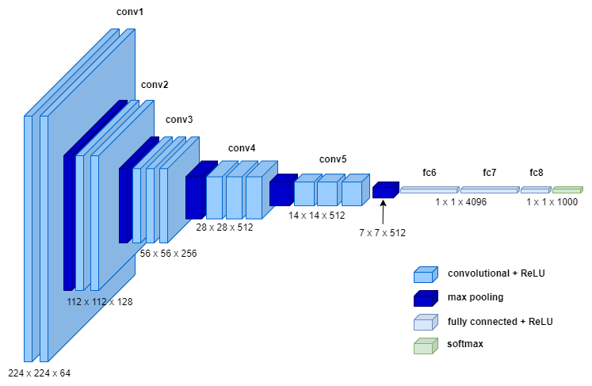
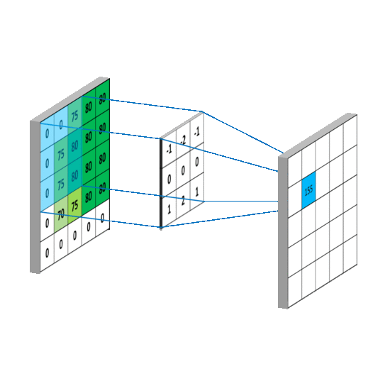
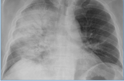
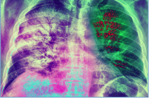
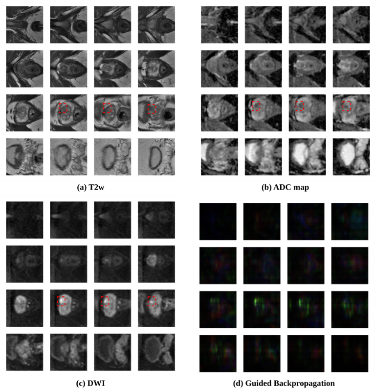
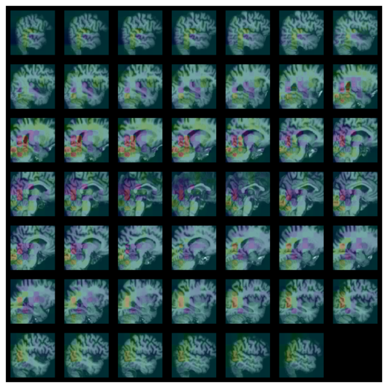
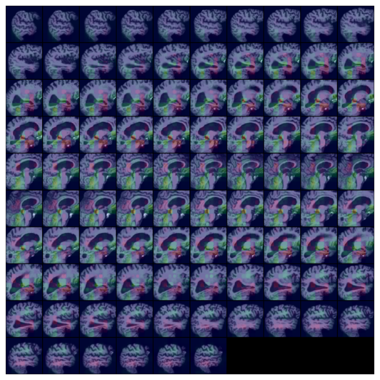
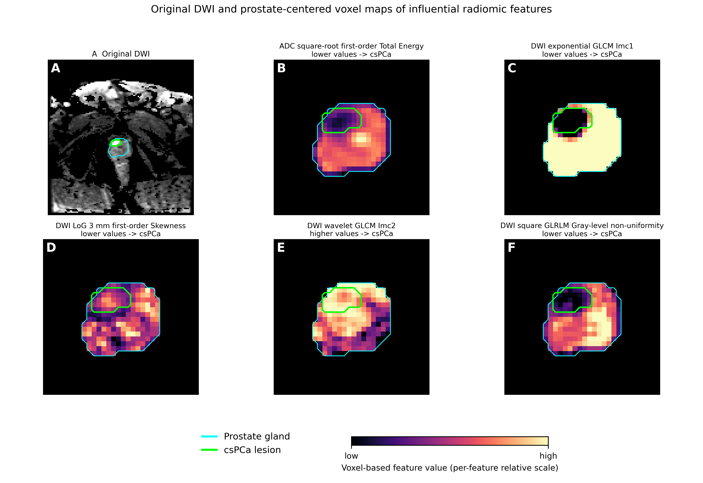
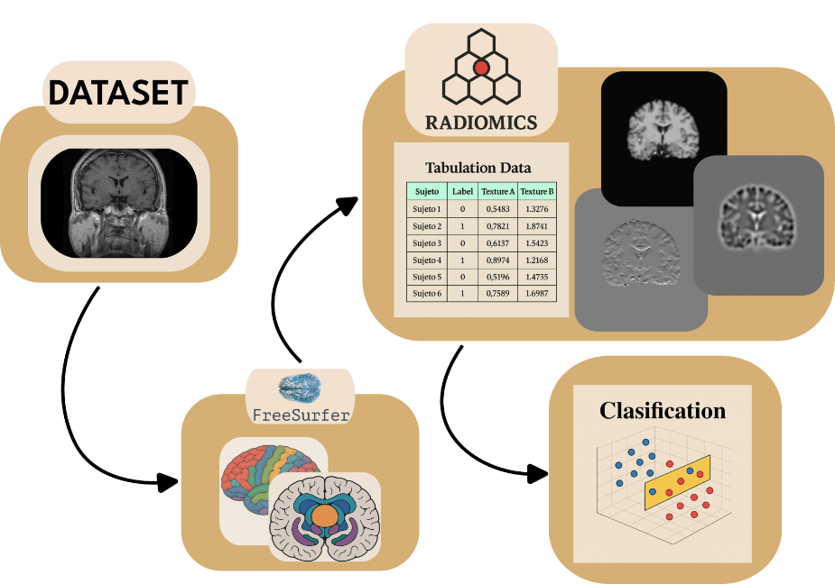

Análisis de datos con inteligencia artificial
Segmentación, clasificación, generación de informes, radiómica, aprendizaje federado y casos clínicos reales: así aplicamos la inteligencia artificial a la imagen médica.
Segmentación, clasificación, generación de informes, radiómica, aprendizaje federado y casos clínicos reales: así aplicamos la inteligencia artificial a la imagen médica.
01 · SEGMENTACIÓN DE IMAGEN MÉDICA

Segmentación 3D de múltiples estructuras (columna, pelvis, riñones, bazo, hígado) a partir de TC, con revisión conjunta del render volumétrico y los cortes axial, coronal y sagital.

Delimitación automática de vértebras, discos intervertebrales, canal medular y tejidos blandos adyacentes sobre MRI sagital lumbar.

Comparativa 2D (PI-RADS)

Reconstrucción 3D
Comparativa de modelos de segmentación sobre MRI multiparamétrica (PI-RADS 2 a 5) y reconstrucción volumétrica 3D de las zonas prostáticas a partir de la segmentación por cortes.
02 · CLASIFICACIÓN E INTERPRETABILIDAD DE MODELOS
Clasificación de hallazgos radiológicos (cardiomegalia, atelectasia, consolidación, nódulo, derrame pleural…) sobre radiografía de tórax mediante una CNN entrenada extremo a extremo, con probabilidad estimada por hallazgo.


Arquitectura de la CNN (tipo VGG)

Original

Mapa de activación
Probabilidad por hallazgo
Clasificación combinando secuencias T2w, ADC map y DWI, con guided backpropagation para explicabilidad del modelo.

Caso clínicamente significativo

Secuencias de entrada y guided backpropagation
Clasificación de MRI cerebral en Early Mild Cognitive Impairment, Mild Cognitive Impairment y Alzheimer's Disease, con mapas de activación superpuestos sobre los cortes sagitales.

Early Mild Cognitive Impairment

Mild Cognitive Impairment

Alzheimer's Disease
03 · RADIÓMICA
Extracción de una gran cantidad de características de las imágenes médicas mediante algoritmos de caracterización de datos, para alimentar modelos predictivos. Todos nuestros estudios comparten el mismo flujo, implementado en un framework propio y reutilizable entre patologías y modalidades.
Graduación objetiva de la escala de Pfirrmann (I–V) sobre T2 sagital lumbar del dataset MIDAS: 717 sujetos, 25 hospitales, anotados por 3 expertos.

AUC de Gradient Boosting, el mejor modelo
Agrupar los grados en dos clases mitiga el desbalance —los grados I y V suponen menos del 5 % cada uno— y se alinea con el umbral clínicamente relevante entre degeneración temprana y avanzada.
El análisis SHAP muestra que la decisión sigue la fisiología de la degeneración: los discos sanos son homogéneos, brillantes y esféricos; los degenerados pierden esfericidad y ganan heterogeneidad de textura. La esfericidad de la forma encabeza la importancia en todos los grados.
Radiómica de glándula completa sobre MRI biparamétrica (T2w, ADC, DWI) más biomarcadores clínicos, en la cohorte pública PI-CAI: 1.500 estudios, 3 centros, 28,3 % de prevalencia.
AUROC por fuente de información
Combinar imagen y clínica evita 37 biopsias por cada 100 con un VPN de 0,90. La caída fuera de centro marca el límite: la transportabilidad debe demostrarse antes de desplegar.
La firma es marcadamente de difusión: 80 de las características seleccionadas provienen de DWI, coherente con la restricción de difusión propia del tumor. Tres métodos de atribución independientes —SHAP, gradientes integrados y SHAP por permutación— convergen en las mismas variables, y al añadir clínica la densidad de PSA pasa a encabezar la lista.
Retroproyectadas voxel a voxel sobre la imagen, esas características se concentran sobre la lesión delineada en lugar de dispersarse por la glándula: el modelo captura un fenotipo real, no un artefacto de ajuste.

Mapas voxel a voxel de las características más influyentes · glándula en cian, lesión en verde
Radiómica cerebral sobre MRI estructural en 134 sujetos con primeras alucinaciones —sin diagnóstico establecido de esquizofrenia— frente a 187 controles, con segmentación por regiones mediante FreeSurfer (Aparc+ASeg).

AUC por modelo, fold óptimo
Naïve Bayes 0,906 · Gradient Boosting 0,901 · k-NN 0,887
Los seis clasificadores convergen en un rango estrecho (0,89–0,94), lo que apunta a una señal robusta en las características más que a un modelo concreto. Los modelos lineales rinden al nivel de los ensembles, coherente con una firma de pocas variables bien separadas.
El análisis SHAP muestra que la discriminación no se apoya en volúmenes ni en intensidades globales, sino en textura de alta frecuencia: descriptores GLCM y de primer orden calculados sobre subbandas wavelet y filtros LoG de cada región segmentada.
Las variables dominantes se concentran en unas pocas regiones concretas, con las de mayor peso aportando desplazamientos amplios en la predicción individual — una firma compacta y no difusa por todo el cerebro.
04 · APRENDIZAJE FEDERADO
Enfoque descentralizado para entrenar modelos de aprendizaje automático: los datos permanecen en los dispositivos/nodos locales y solo se comparten las actualizaciones del modelo, garantizando privacidad y seguridad.

Red federada para acelerar la aplicación de la IA en el Sistema Sanitario Español. Reconocimiento de entidades en informes (NER) aplicado a la extracción de hallazgos PI-RADS/BI-RADS desde informes de radiología en varios hospitales de la Comunitat Valenciana.

Infraestructura que integra y gestiona datos de salud de múltiples fuentes (Fundación Hospital Provincial de Castellón, ISABIAL, IIS La Fe, OmicSpace…) coordinada por la Generalitat Valenciana.
Visualizamos estos modelos y datos en 3D, en web y con dispositivos de realidad aumentada.